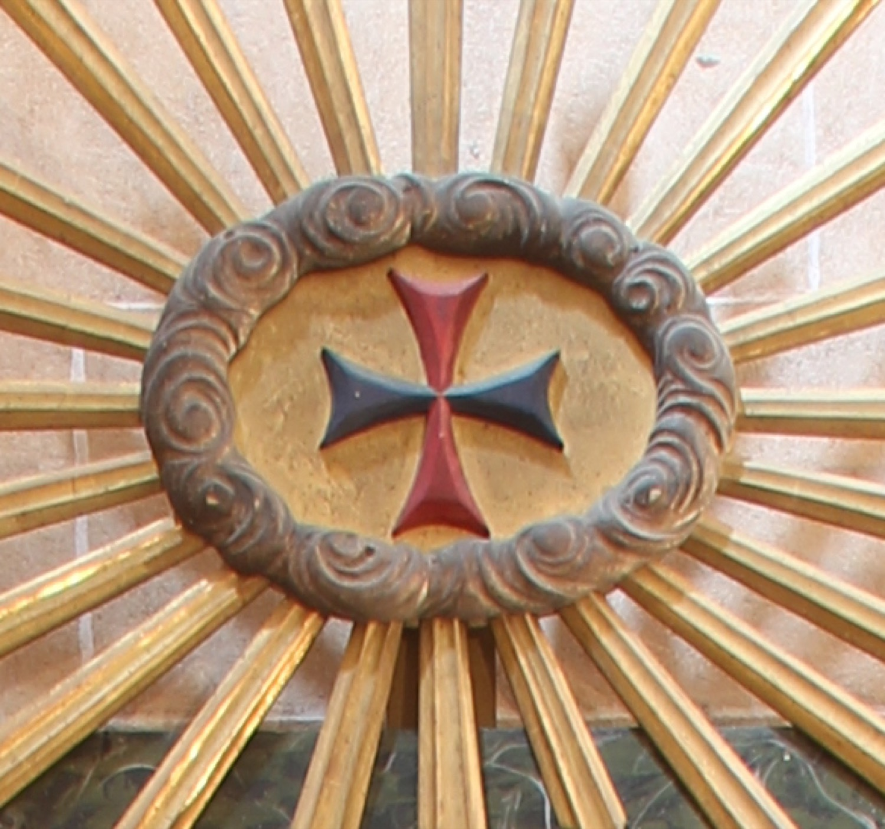

La creu patent (amb els braços que s'estrenyen en arribar al centre i s'eixamplen en els extrems) vermella i blava és el símbol de l'Orde de la Santíssima Trinitat i de la Redempció de Captius, també coneguda com l’Orde Trinitària. El seu origen és una visió que tingué sant Joan de Mata on va veure Jesús amb una creu vermella i blava al pit i les mans sobre els caps d'un presoner cristià i un de musulmà, i que interpretà com un mandat diví que havia de fundar un ordre dedicat a l'alliberament dels cristians captius a terres musulmanes. Els colors de la creu representen la Santíssima Trinitat, l'element fonamental de l’espiritualitat trinitària: la branca blava representa el Fill i la branca vermella, l'Esperit Sant; usualment el fons és blanc (no és aquest el cas) i representa el Pare.
L’estructura del retaule que inclou aquesta creu a l’àtic és obra de Bernadí Mulet (s. XIX).